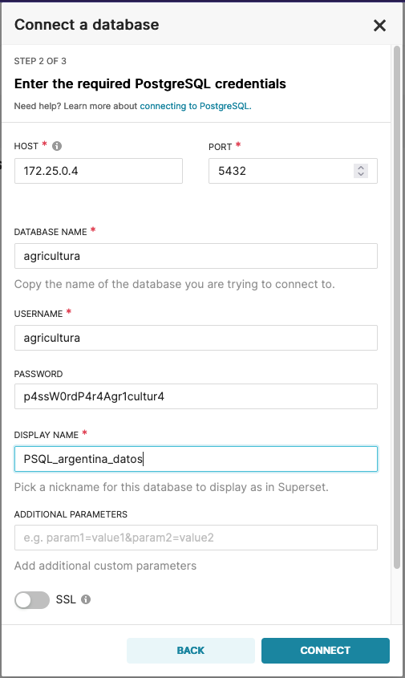
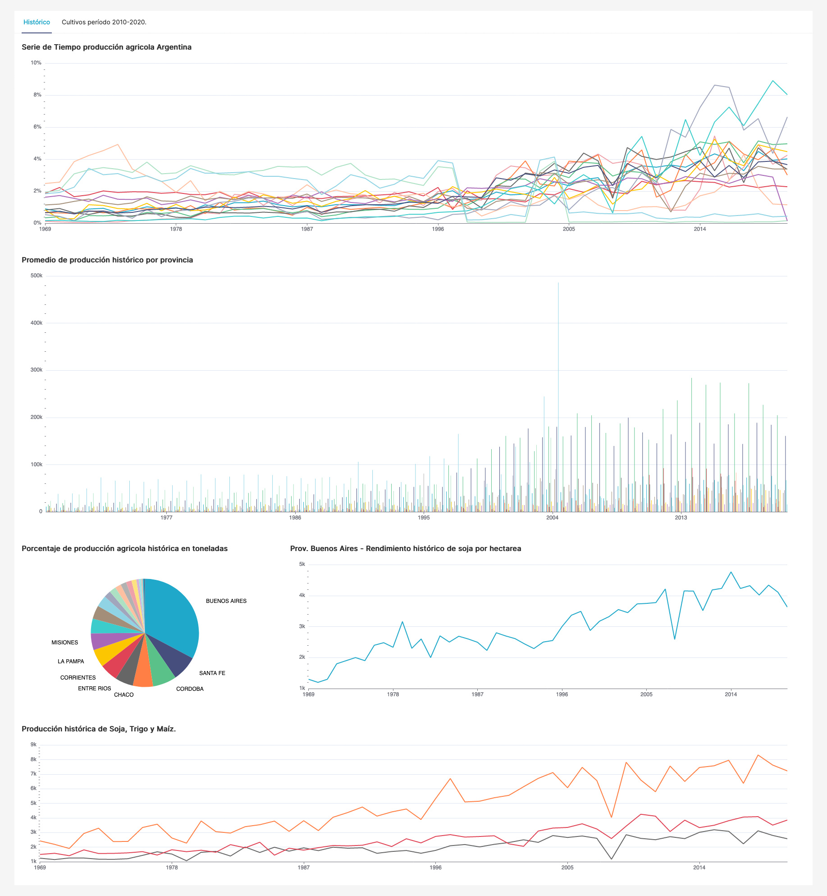

Indicaciones
Al ejecutar el comando './control-env.sh start' en la consola debería de imprimirse el token para Jupyter notebook. Igualmente puede obtenerse a partir del siguiente comando: ./'control-env.sh token'
Pasos a llevar adelante:
- Correr script (01-argentinaDatosWrite) en jupyter notebook para ETL
- Correr script (02-argentinaDatosAdd) en jupyter notebook para generar las tablas secundarias.
- Correr el comando './control-env.sh superset-init' para inicializar los dashboards.
-
Una vez ejecutados los procesos a través de los notebooks e inicializado superset ingresar a Superset
para las visualizaciones con el user y password ingresado previamente con el comando
'superset-init'. En caso de necesitar
re-conectar la base de datos para las visualizaciones ingresar a la lista de bases de datos
click en '+ Database' y agregar los siguientes campos:

- Ingresar Display Name: PSQL_argentina_datos
- Obtener la ip de postgres a través del siguiente comando './control-env.sh superset-ip'.
- Pass para copiar: p4ssW0rdP4r4Agr1cultur4
Es posible hacer la conexión a través del siguiente comando URI (en [IP] ingresar lo obtenido con ./control-env.sh superset-ip ):
postgres://agricultura:p4ssW0rdP4r4Agr1cultur4@[IP]:5432/agricultura - Correr el comando ./control-env.sh superset-import. El mismo va a importar el dashboard ubicado dentro del entorno docker en el path /home/superset/dashboards y dentro del repositorio en ./earth/superset/dashboards.
- Acceder al dashboard
- Para terminar los procesos ./control-env.sh stop
- Para borrar los datos ./control-env.sh cleanup
Funciones disponibles
- './control-env.sh start'
- './control-env.sh stop'
- './control-env.sh token'
- './control-env.sh superset-init'
- './control-env.sh superset-ip'
- './control-env.sh superset-import'
- './control-env.sh cleanup'
Screens dashboard
